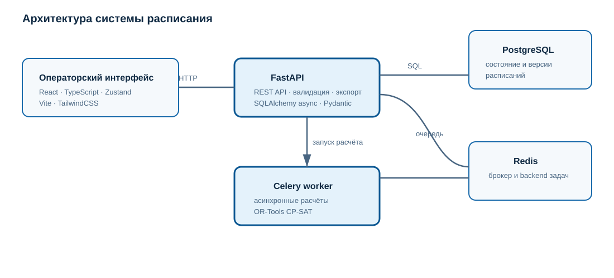

Архитектура системы
Система расписания для Университета «Сириус» — web-приложение с асинхронным планировщиком. SPA обращается к FastAPI; API хранит данные в PostgreSQL и передаёт длительные расчёты worker-процессам через Redis/Celery.
{kind=link}

React SPA ──HTTP──> FastAPI API ──async SQLAlchemy──> PostgreSQL
│
├──> Redis ──> Celery worker ──> OR-Tools CP-SAT
│
└──> Excel export
Компоненты
Frontend: React, TypeScript, Vite, Zustand и TailwindCSS. Страницы: исходные данные, учебные потоки, календарь, расчёты, журнал операций, расписание и справочники.
Backend: FastAPI, Pydantic v2, SQLAlchemy 2.0 async. API-префикс:
/api/v1.Database: PostgreSQL — производственная СУБД.
Worker: Celery использует Redis как брокер и backend задач.
Optimizer: Google OR-Tools применяет CP-SAT для размещения занятий.
Структура репозитория
src/app/api/routes— HTTP-маршруты.src/app/services— бизнес-логика генерации, импорта, экспорта и lifecycle.src/app/database— модели и сессии БД.src/app/migrations— Alembic-миграции.src/app/tests— автоматические тесты.spa/src/pagesиspa/src/store— интерфейс и общее состояние.